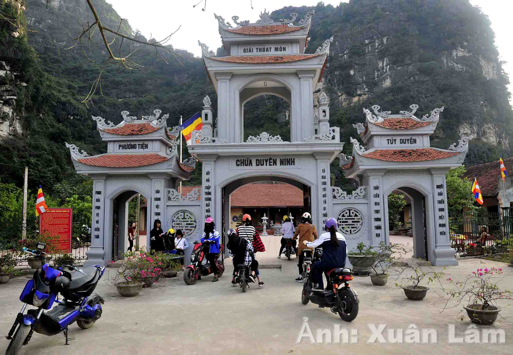

Ngôi chùa cầu duyên linh thiêng tại Ninh Bình
Ninh Bình là địa danh được biết đến với nhiều công trình kiến trúc tâm linh độc đáo. Các ngôi chùa ở đây đều mang trong mình một nét riêng trong kiến trúc cũng như trong lịch sử hình thành và phát triển. Trong đó, có chùa Duyên Ninh hay còn có tên gọi khác là chùa Thủ - được xem là một trong những ngôi chùa cầu duyên nổi tiếng ở Việt Nam.
Chùa Duyên Ninh tọa lạc tại thôn Chi Phong, xã Trường Yên, huyện Hoa Lư, tỉnh Ninh Bình. Chùa thuộc khu vực bảo vệ đặc biệt của Khu di tích lịch sử Cố đô Hoa Lư, nằm ngay trên trục đường Tràng An đi chùa Bái Đính rất thuận tiện cho hành trình
tham quan của du khách. Chùa Duyên Ninh là ngôi chùa cổ có lịch sử hình thành vào khoảng thế kỷ thứ X dưới thời vua Đinh Tiên Hoàng. Chùa nằm ở vị trí thành Tây của kinh đô xưa, toàn bộ khuôn viên của chùa có tổng diện tích khoảng 10ha.
Giống một số ngôi chùa trong địa bàn tỉnh, chùa Duyên Ninh thờ Phật và các nhà sư ở thế kỷ thứ X như: Pháp Thuận, Khuông Việt và Vạn Hạnh.

Theo ngược dòng lịch sử ghi chép lại, chùa Duyên Ninh là nơi các công chúa thời nhà Đinh- Lê thường xuyên lui tới vãn cảnh. Tại nơi đây, công chúa Lê Thị Phất Ngân và tướng công Lý Công Uẩn đã kết duyên với nhau và sinh ra Lý Phật Mã (hay
còn là vua Lý Thái Tông). Sau này, khi vua Lý Thái Tông trở về đây dẹp loạn đã đổi tên chùa thành chùa Duyên Ninh. Vào những năm cuối đời, Hoàng hậu Phất Ngân đã quay trở về đây tu hành và cũng là để dắng dõi mộ phần thân phụ là Hoàng
đế Lê Đại Hành. Tại đây, Hoàng hậu đã se duyên tác hợp cho nhiều đôi lứa được nên vợ nên chồng, từ đó chùa Duyên Ninh trở thành ngôi chùa cầu duyên nổi tiếng tại vùng đất Cố đô Hoa Lư. Thời gian qua đi, ngày nay kiến trúc chùa đã không
còn giữ được nguyên vẹn như xưa, khuôn viên chùa hiện nay gồm chính điện, nhà tổ, phòng khách, nhà ăn, vườn cây,… đặc biệt có mộ tháp xá lợi là kiến trúc cổ vẫn còn giữ lại được sau dòng chảy 1000 năm.
Chùa nằm ở vị trí thuận lợi giữa Khu du lịch sinh thái Tràng An và chùa Bái Đính nên thu hút nhiều khách du lịch thập phương đến chiêm bái. Đặc biệt là vào dịp đầu năm trong không gian khói hương linh thiêng và rả rích những hạt mưa xuân,
các bạn trẻ tìm về chùa để cầu mong sự may mắn trong chuyện tình duyên . Ở đây, chữ “duyên” có ý nghĩa là duyên số, tình duyên, duyên nợ,…là cái duyên trong chuyện tình cảm, là sự may mắn cùng với đó là yếu tố khách quan bên cạnh sự nỗ
lực của mỗi người trong từng hoàn cảnh khác nhau. Không chỉ các bạn trẻ tìm về chùa mà tại đây chúng ta còn bắt gặp những cặp vợ chồng hiếm muộn đường con cái đến chùa thành tâm cầu tự. Sở dĩ chùa Duyên Ninh được coi là một trong số những
ngôi chùa cầu duyên nổi tiếng là bởi đã có vô số các bạn trẻ sau khi về chùa thành tâm cầu khấn đã gặp được nửa kia của mình. Chính vì vậy, khi đến chùa ta bắt gặp hình ảnh nhiều đôi bạn trẻ sắm sửa hương hoa lễ quả đến bái tạ, tỏ lòng
thành kính biết ơn Hoàng hậu Phất Ngân đã se duyên tác hợp cho họ.
Trở về chùa Duyên Ninh du khách như được trở về với lòng mẹ, mỗi người đều mang trong mình một ước nguyện cầu mong may mắn trong tình duyên sẽ đến với mình và một năm mới bình an, hạnh phúc. Không chỉ vậy, du khách sẽ còn có cơ hội được ngắm
nhìn thiên nhiên hùng vĩ đẹp say đắm lòng người của mảnh đất Cố đô ngàn năm văn hiến.